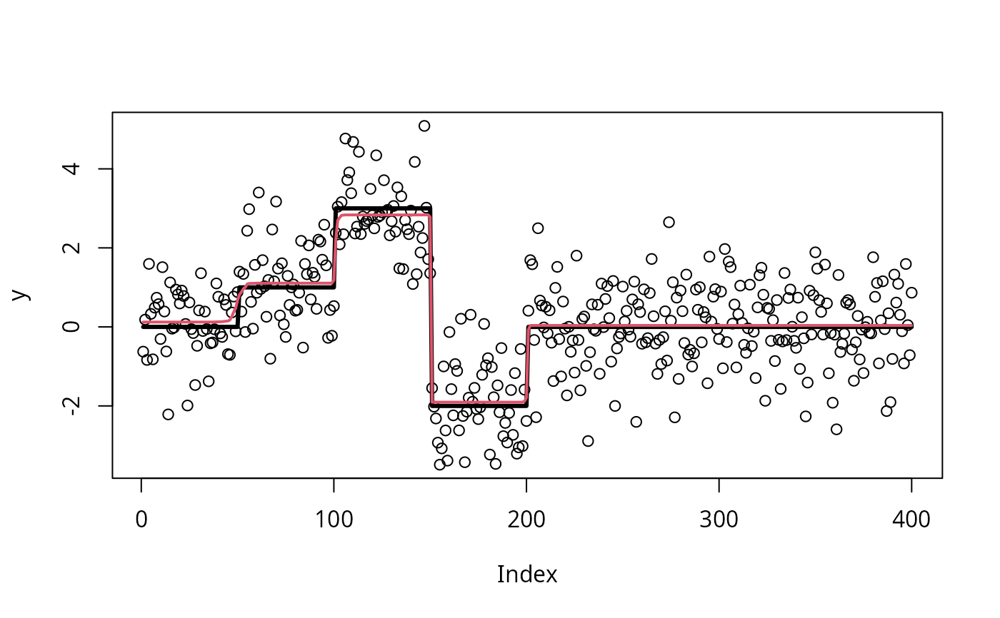

Apply susie to trend filtering (especially changepoint problems), a type of non-parametric regression.
Source:R/susie_trendfilter.R
susie_trendfilter.RdFits the non-parametric Gaussian regression model
\(y = mu + e\), where the mean \(mu\) is modelled as \(mu =
Xb\), X is a matrix with columns containing an appropriate basis,
and b is vector with a (sparse) SuSiE prior. In particular, when
order = 0, the jth column of X is a vector with the first j
elements equal to zero, and the remaining elements equal to 1, so
that \(b_j\) corresponds to the change in the mean of y between
indices j and j+1. For background on trend filtering, see
Tibshirani (2014). See also the "Trend filtering" vignette,
vignette("trend_filtering").
susie_trendfilter(y, order = 0, standardize = FALSE, use_mad = TRUE, ...)
Arguments
| y | An n-vector of observations ordered in time or space (assumed to be equally spaced). |
|---|---|
| order | An integer specifying the order of trend filtering.
The default, |
| standardize | Logical indicating whether to standardize the X
variables ("basis functions"); |
| use_mad | Logical indicating whether to use the "median
absolute deviation" (MAD) method to the estimate residual
variance. If |
| ... | Other arguments passed to |
Value
A "susie" fit; see susie for details.
Details
This implementation exploits the special structure of X,
which means that the matrix-vector product \(X^Ty\) is fast to
compute; in particular, the computation time is \(O(n)\) rather
than \(O(n^2)\) if X were formed explicitly. For
implementation details, see the "Implementation of SuSiE trend
filtering" vignette by running
vignette("trendfiltering_derivations").
References
R. J. Tibshirani (2014). Adaptive piecewise polynomial estimation via trend filtering. Annals of Statistics 42, 285-323.
Examples
set.seed(1) mu = c(rep(0,50),rep(1,50),rep(3,50),rep(-2,50),rep(0,300)) y = mu + rnorm(500) s = susie_trendfilter(y) plot(y)#> $cs #> $cs$L1 #> [1] 150 #> #> $cs$L2 #> [1] 42 45 46 47 48 49 50 51 52 53 54 55 #> #> $cs$L3 #> [1] 199 200 201 #> #> $cs$L5 #> [1] 99 100 101 102 103 #> #> #> $coverage #> [1] 0.9835996 0.9570577 0.9796633 0.9889395 #> #> $requested_coverage #> [1] 0.95 #>